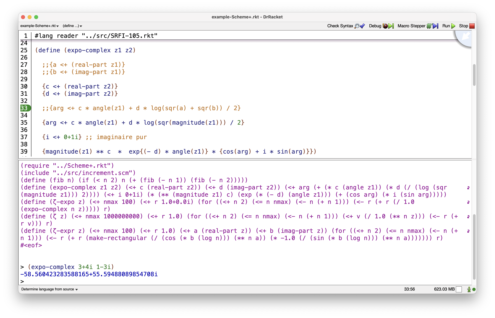

Enhancing Scheme (and Lisp-like) language.
Damien Mattei
"Doubts are such tiny things. A mind with no room for doubts must have no room for thoughts either." -R. Patti
Scheme+ version 5.0 for
Racket Scheme
Display options for viewing this
documentation:
Click
here for a larger page view that improve code display.
Click
here for the light HTML page version of this page.
Click
here for the dark Hacker Theme version of this page.
1. Scheme+ at a glance:
Scheme+ is an extension of the syntax of the Scheme language.
Scheme+ makes it easy the assignment of Scheme objects in
infix (works also in prefix) notation with
a few new operators ← (or
<-), [ ],⥆ (or <+) .
The idea of Scheme+ first come to my mind when comparing
the assignation syntax used in Clojure with Scheme and Lisp,
and later the easyness of creating and assigning variables
in Python completely convince me that the Scheme system have
to be enhanced.
The idea of Scheme+ is also came from this : "Why is it so boring to define variables in Scheme with the traditionnal set of LET,LET*,LETREC,LET-VALUES special forms?" and "Is it possible to use a single mechanism for assignment in Scheme?"
It comes also from the ascertainment that "A computer language is created by ONE man, later, a community only bring a library to the language without self-questioning any more on the fundations of language itself."
Scheme+ is a Scheme module.
Once loaded by inserting this in the header of the source
file : (require Scheme-PLUS-for-Racket/Scheme+)
Scheme+ brings syntax to classic Scheme language like those:
{x <- y} infix assignment of the value of y to the variable x.
The same thing with a new symbol ← : (unicode 2190 in hexadecimal that can be enter under Linux with Ctrl-Shift u 2190 Enter or Space bar)
{x ← y}
With operator precedence: {xp <- {x - v * t} / (sqrt {1 - v ** 2 / c ** 2})}
Assignment from right to left : {y ← 7}
Assignment from left to right : {7 → y}
⥆ or <+ : Define and assign a new variable in the current environment ,example : {v ⥆ 7}
(unicode 2946 , on Mac OS use
CTRL+CMD+space to bring up the
characters
popover,
then type in u+unicode (ex: u+2946)
and hit Enter to
get it)
, and in Emacs you can insert an unicode char with the
sequence:
‘C-x 8 RET’ followed with unicode of the
character
you want)
{T[k]} return value of vector or array T indexed by k.
{T[k] <- x} infix assignment of T[k] with x.
{T[k] <- T[{k
+ 1}]} in infix or the same with a little part of
classic prefix Scheme: {T[k] <- T[(+
k 1)]}
the same with multi dimensional
arrays or matrix:
{T[m n]} return the value of the multi
dimension array T indexed by m and n
{T[m n] <- T[m {n + 1}]}
{T[m n] ← T[m {n + 1}]}
compatible with strings:
{str <+ (string-copy
"hello")}
"hello"
{str[4]}
#\o
{str[4] <- #\a}
#\a
str
"hella"
with function definition:
(declare fact)
{fact <- (λ (n) (if {n <> 0} {n * (fact {n - 1})}
1))}
or just:
{fact ⥆ (λ (n) (if {n <> 0} {n * (fact {n - 1})} 1))}
{fact(8)}
40320
no more need of LET,LET*,LETREC,LET-VALUES,...
← is an n-arity operator, example :
(declare x y z t)
{x ← y ← z ← t ← 7}
7
(list x y z t)
(7 7 7 7)
Another example which build an identity matrix:
(require srfi/25)
(declare I)
{I ← (make-array (shape 0 4 0 4))}
{I[0 0] ← I[1 1] ← I[2 2] ← I[3 3] ← 1}
1
I
#<array:srfi-9-record-type-descriptor>
> {I[0 0]}
1
> {I[0 1]}
0
defining new functions with def instead of the
classic define we can now use return to escape
immediately from the current level of recursive call and return-rec to escape from the full stack of recursive calls :
(return)
or returning the value v:
The <+ operator works also for
defining multiple values :
{(a b c) <+ (values 7 8 9)}
7
8
9
(list a b c)
'(7 8 9)
{(x y z) <+ (u v w) <+ (a b
c) <+ (values 2 4 5)}
2
4
5
(list x y z u v w a b c)
'(2 4 5 2 4 5 2 4 5)
We can also assign multiple values
on
the fly:
(declare x y z)
{(x y z) <v (values 2 4 5)}
2
4
5
(list x y z)
'(2 4 5)
(declare u v w)
{(x y z) <v (u v w) <v (values 2 4 5)}
2
4
5
(list x y z u v w)
'(2 4 5 2 4 5)
Here is an example of the previous features about a dynamic solution of the subset sum problem:
#lang reader "SRFI-105.rkt"
(require Scheme-PLUS-for-Racket/Scheme+)
(declare L-init t-init ls dyna cpt)
{L-init <- '(1 3 4 16 17 24 45 64 197 256 275 323 540 723 889 915 1040 1041 1093 1099 1111 1284 1344 1520 2027 2500 2734 3000 3267 3610 4285 5027)}
{t-init <- 35267}
{ls <- (length L-init)}
{dyna <- (make-array 0 {ls + 1} {t-init + 1})}
(define (one-two b)
(if b 1 2))
{cpt <- 0}
(def (subset-sum-dynamic L t)
(declare ls dyn c R s) ;; declare multiple variables
{ls <- (length L)}
{dyn <- dyna[ls t]} ;; dyna is a toplevel defined array
;; dyna[ls t] means : 0: unknown solution, 1: solution found, 2: no solution
(if {dyn <> 0} ;; IF or WHEN : it is the same thing here (only one statement)
(return (one? dyn)))
(when (null? L)
{dyna[ls t] <- 2}
(return #f))
{c <- (first L)}
(when {c = t} ;; c is the solution
{dyna[ls t] <- 1}
(return #t))
{R <- (rest L)} ;; continue searching a solution in the rest
(if {c > t} ;; c is to big to be a solution
{s <- (subset-sum-dynamic R t)}
;; c is part of the solution or c is not part of solution
{s <- {(subset-sum-dynamic R {t - c}) or (subset-sum-dynamic R t)}})
{dyna[ls t] <- (one-two s)}
s) ;; return boolean value
(subset-sum-dynamic L-init t-init) #t
Warnings about code highlighting tag due to bugs in Github
Markdown system:
-if you read this page on github.com the code examples display
encapsuled between tags 'highlight scheme' and 'endhighlight'
composed also with {} and % characters.
-if you read this page on github.io the code examples display
starting with 3 backquotes char , the tag 'scheme' and ending
again with 3 backquotes char. The curly brackets {} display in
a rectangular with red background because the Github Jekill
rouge theme (unfortunately the ony one available) does not
understand the infix notation of Scheme.This is,of course, not
what i expected but i can not find any issue to this problem.
Those weirds Markdown and tags should not be displayed and are
not part of Scheme+ examples. for a better view click here (or do not care
of highlighting tag and triple backquotes when code is
displayed!)
Another example with DrRacket Scheme in the REPL (Read Eval Print Loop):

Hash Tables support :
(require Scheme-PLUS-for-Racket/Scheme+)
(require srfi/69) ;; support for SRFI 69 Basic hash tables
{my-hash-tbl <+ (make-hash-table)} ;; add an object in the current environment, here a hash table
(hash-table? my-hash-tbl)
#t
{my-hash-tbl["three"] <- 3}
3
{my-hash-tbl["three"]}
3
for the rest read below and the documentation.
2.Download Scheme+:
The source code of the Scheme+ module for Racket implementation of Scheme can be retrieved here:
>>> Download Scheme+ as .zip
<<<
>>> Download Scheme+ as .tar.gz
<<<
>>> https://github.com/damien-mattei/Scheme-PLUS-for-Racket
--> Code --> Download ZIP <<<
Including :
An implementation of the SRFI-105
"Curly Infix" with a REPL (Read Eval Print Loop) for Racket.
(file SRFI-105.rkt)
The enhanced set of LET special forms in the file let.scm.
Many of the examples of this web page are in the source file SssDyna.scm.
3.Requirements:
Scheme+ needs a Scheme interpreter and will be adapted and
released for many Scheme (Guile,Racket,...), download Racket
Scheme:
It has been developed with Racket v8.2 on Mac OS and Racket v7.7
under Linux.
4.Author and license:
Damien Mattei ; Scheme+ : Copyright 2021-2022 Damien Mattei under GNU GENERAL PUBLIC LICENSE Version 3
Nice - France (commune de Carros)
contact : firstname Dot lastname At Google Mail
Guagno - Island of Corsica
To subit an issue, a bug or something else related with the
Scheme+ code use the Github issues system.
5.Installation:
The easiest way to install Scheme+ for Racket is via the
official
packet manager of Racket : File -> Packet Manager
and go to tab 'Available from catalog' and filter for 'Scheme+'
key word.
Other way is also from Packet manager to install the
dowloaded
package via th tab 'Do what i mean' -> Browse ->
Directory and select the directory downloaded and
uncompressed in the section 2 of this page.
Anyway you can find the Scheme+ for Racket package here: https://pkgs.racket-lang.org/package/Scheme-PLUS-for-Racket
.
This is mandatory.
You can find the SRFI-105.rkt file in the downloaded package of Scheme+ (in the subdirectory SRFI)
6. Idea and rationale:
The core language of Scheme and Lisp are based on syntaxic form that date back from '50 for Lisp and '70 for Scheme. Syntactic forms such as the set of LET,LET*,LETREC,... have since long ago been replaced in many other languages (C/C++,Java,Fortran,Pascal,Javascript,BASIC (the LET keyword can be ommited in Applesoft Basic),by simple assignment operator that frees the syntax and allow saving indentation space, number of parenthesis, readability of code.
The main idea of this project is to improve Scheme and Lisp like languages with syntaxic features,such as easy assignment for many object types (numbers,strings,vectors,arrays,etc),and also allowing an immediate 'return' mechanism to escape from procedure when result is known and others features that exist in others languages (Python,Java,C/C++,Pascal,BASIC,Javascript). Some new features can be and are better used with infix notations (SRFI 105 known as "Curly Infix"),so for some syntactic expressions infix will be promoted (but not mandatory).
A few new feature (see below) allow a great change in syntax and readability of Scheme programs. Less parenthesis are used,less indentation and it allows an enhanced programming style that modernize Scheme but also keep it 100% compatible with the original language.
Also vectors and arrays in Scheme are painfully accessed and modified by vector-ref and vector-set! , Scheme+ use a simplier syntax again with the <- operator and the [] syntax.
This intuitive notation works also with Hash Tables.
Scheme+ will remove the need for the classic LET set of
special form, no more need of LET,LET*,LETREC,LET-VALUES,...
and will use an unique infix (or not) assignment operator :
<-. (also LET are enhanced - the project starts historically by
improving and simplifying LET, i simplified it so much that i
remove it now! - in other versions such as let<-arrow
requiring less brackets, even if their use is useless and no
more promoted, see extra features part)
7. Features:
The list of new features is subject to change and will grow by time, this version allows:
- use of infix SRFI 105 "Curly Infix" for some syntax forms
- Assignment operator : <- (can be used in infix syntax and from left to right and right to left)
- Square Bracket operator [] working with Scheme Vectors, Arrays,Multidimentional Arrays,Hash Tables,Strings...
- combination of Assignment operator <- with [] operator for Vectors,Arrays,....
- RETURN : return keyword used in any procedure to return from procedure and return a value.
- declaration of variables
- declaration and assignment of variables with an infix operator.
- conditionals and execution of code in a new form : condx
- extra feature: new set of LET special forms,even if their use is completely discouraged in favor of assignment operator combined with declarative form (see declare).
8. First Examples:
The Fibonacci sequence:
This example is written in Scheme with and without infix notation just to allow the reader to be familiar with "curly infix" notation which is not part of Scheme+ but used by it:
Here is the definition in classic prefix Scheme:
(define (fibonacci n)
(if (< n 2)
n
(+ (fibonacci (- n 1)) (fibonacci (- n 2)))))
And here is a definition using "Curly Infix" SRFI 105:
(define (fib n)
(if {n < 2}
n
{(fib {n - 1}) + (fib {n - 2})} ))
note that the last expression of fib: {(fib {n - 1}) + (fib {n - 2})} could also be expressed in curly infix Scheme like that : {fib({n - 1}) + fib({n - 2})} or even like that: {fib{n - 1} + fib{n - 2}} but i will not use them, preferring to use infix only where mathematical calculus are coded and for comparaison tests in conditionals.
Fibonacci is time consuming,even fib(47) can takes minutes to compute. We will write a faster dynamic version that memorize the results computed more than one time.
Here is a solution in classic Scheme:
(define size0 10000)
(define memo0 (make-vector size0 0))return
(define (fibdyna0 n)
(cond ((< n 2) n)
((not (zero? (vector-ref memo0 n))) (vector-ref memo0 n))
(else (let ((fibn (+ (fibdyna0 (- n 1)) (fibdyna0 (- n 2)))))
(vector-set! memo0 n fibn)
fibn))))
In the example above we can notice that the array access and modification is not easy to read and in the else block i have to use a let special form to create a local variable to return the value computed and already stored in array,even if i have not used a local variable i then must have to access the result in array to return it...
Scheme+ allow to write code more readable and simpler than normal Scheme.
Prior to use Scheme+ for DrRacket Scheme, you must add a #lang reader "SRFI-105.rkt" directive in the first line of your program and the module must be loaded,this is done by inserting the statement (require Scheme-PLUS-for-Racket/Scheme+) in your program, however another method can be to 'require' the file : (require "Scheme+.rkt") if you have downloaded the source code.
Below is the version of the above code written in Scheme+ :
#lang reader "SRFI-105.rkt"
(require Scheme-PLUS-for-Racket/Scheme+)
{size <+ 10000}
{memo <+ (make-vector size 0)}
(define (fibdyna n)
(cond ({n < 2} n)
({memo[n] <> 0} {memo[n]})
(else {memo[n] <- {(fibdyna {n - 1}) + (fibdyna {n - 2})}}) ))
The reader can notice the introduction of one new assignment operator <- and also <+, the latter being simply an infix define of Scheme. The important point of the new assignment operator <- of Scheme+ is that it will work like the classic set! of Scheme on variables but also will work on more complex object such as element of vectors,multidimensional arrays (as defined in SRFIs),... and much more in the next versions of Scheme+. (we will see another more complex example with multidimentional array later)
So {x <- 7} simply assign 7 to the variable x but {m[3] <- 7} will store 7 in the array m at the position indexed by 3. Access an element of array is also simpler in Scheme+ than in Scheme: {m[3]}. And this syntax is 100% compatible with Scheme, you can mix both the syntaxes if you want. This syntax is also more natural and readable and much like the mathematical notation, it is also a syntax used for arrays in other languages such as C/C++,Python,Java,Pascal,Javascript...
Also you will notice that the main computation in the else block is now shorter and it is partly due to the fact that the assignment operator <- return not NIL but the affected value making it available for other calculus or as a final result value.
Here is now the same solution in a declarative form, in the part called "History of project" i explain why there exist two solutions.
Instead of declare and assign the variables with the define nested in the macro <+ we also can declare them and assign the variables later with the universal <- operator:
#lang reader "SRFI-105.rkt"
(require Scheme-PLUS-for-Racket/Scheme+)
(declare size1 memo1)
{size1 <- 10000}
{memo1 <- (make-vector size 0)}
(define (fibdyna1 n)
(cond ({n < 2} n)
({memo1[n] <> 0} {memo1[n]})
(else {memo1[n] <- {(fibdyna1 {n - 1}) + (fibdyna1 {n - 2})}}) ))
9.Short documentation
Square bracket operator [] is used for vectors,arrays,hash tables,etc.
example: {T[k]} return value of vector or array T indexed by k.
Assignment operator <- can be used only on existing single variables or vector,arrays,etc . Note that vector and arrays must be defined the usual way they are in Scheme. The operator <- works also with multidimensional arrays.
examples :
- {x <- 7}
- {x <- y}
- {m[3] <- 7}
- {T[k] <- x}
- {T[k] <- T[{k + 1}]}
- {T[m n] <- T[m {n + 1}]}
- {my-hash-tbl["three"] <- 3}
Definition and assignment of variables is made with the <+ operator but can also be done with the classic Scheme define.
example: {size <+ 1000}
Declaration of variable can also be used to declare one or many variables. (for explanation why there exist still <+ and declare and not only <- read the part history of project)
example: (declare x y z t)
How to load a Scheme+ program:
Scheme+ programs are loaded this way in Racket and must have a (provide (all-defined-out)) to export all bindings:
(require "logiki+.rkt")
(infix-symb-min-dnf '{ {(not a) and (not b) and (not c) and (not d)} or {(not a) and (not b) and (not c) and d} or {(not a) and (not b) and c and (not d)} or {(not a) and b and (not c) and d} or {(not a) and b and c and (not d)} or {(not a) and b and c and d} or {a and (not b) and (not c) and (not d)} or {a and (not b) and (not c) and d} or {a and (not b) and c and (not d)} or {c and (not d)} } ) disj-norm-form = (or (and c (not d)) (and (not a) (not b) (not c) (not d)) (and (not a) (not b) (not c) d) (and (not a) b (not c) d) (and (not a) b c d) (and a (not b) (not c) (not d)) (and a (not b) (not c) d))
'((¬b ∧ ¬c) ∨ (c ∧ ¬d) ∨ (¬a ∧ b ∧ d))
We can use a convention to name the Scheme+ programs and
function with a + at end, keeping the .scm extension unchanged
for compatibility.
10.Advanced examples:
Here is another example, from the Subset Sum Problem that show the use of <+ and <- (due to the impossibility to have easily a single operator :-( ) :
#lang reader "../SRFI/SRFI-105.rkt"
(require "../Scheme+.rkt")
;;(require Scheme-PLUS-for-Racket/Scheme+)
{L-init <+ '(1 3 4 16 17 24 45 64 197 256 275 323 540 723 889 915 1040 1041 1093 1099 1111 1284 1344 1520 2027 2500 2734 3000 3267 3610 4285 5027)}
{t-init <+ 35267}
{ls <+ (length L-init)}
{dyna <+ (make-array 0 {ls + 1} {t-init + 1})}
{cpt <+ 0} ;; define cpt to 0
(define (subset-sum-guile L t)
{ls <+ (length L)}
{dyn <+ dyna[ls t]}
{cpt <- {cpt + 1}} ;; cpt has been already defined at toplevel
;; dyna[ls t] means 0: unknown solution, 1: solution found, 2: no solution
(condx [{dyn <> 0} (one? dyn)]
[(null? L) {dyna[ls t] <- 2} #f] ;; return #f
[exec {c <+ (first L)}]
;; c is the solution
[{c = t} {dyna[ls t] <- 1} #t] ;; return #t
[exec {R <+ (rest L)}]
;; continue searching a solution in the rest
[{c > t} {s <+ (subset-sum-guile R t)}
{dyna[ls t] <- (one-two s)}
s] ;; return boolean value
;; else : c < t at this point
;; c is part of a solution OR not part of a solution
[else {s <+ {(subset-sum-guile R {t - c}) or (subset-sum-guile R t)}}
{dyna[ls t] <- (one-two s)}
s])) ;; return boolean value
(subset-sum-guile L-init t-init)
#t
note: in the example above condx is a macro that allow execution of arbitrary code between conditionals clauses,general syntax is:
(condx [condition statements ...]
[exec statements ... ]
...
[else statements ...])
In classic Scheme the code would be like that which is longer than in Scheme+:
(define cpt 0)
(define (ssigma-proto L t)
(set! cpt {cpt + 1})
(define ls (length L))
(define dyn (array-ref dyna ls t))
;; dyna[ls][t] means 0: unknown solution, 1: solution found, 2: no solution
(cond [(not (zero? dyn)) (one? dyn)]
[(null? L) (array-set! dyna 2 ls t) #f] ;; return #f
[else (let [(c (first L))]
(if {c = t} ;; c is the solution
(begin
(array-set! dyna 1 ls t)
#t) ;; return #t
;; else
(let [(R (rest L))]
(if {c > t} ;; continue searching a solution in the rest
(let [(s (ssigma-proto R t))]
(array-set! dyna
(one-two s)
ls t)
s) ;; return s
;; else
;; c < t at this point
;; c is part of the solution or his approximation
;; or c is not part of solution
(let [(s {(ssigma-proto R {t - c}) or (ssigma-proto R t)})]
(array-set! dyna (one-two s)
ls t)
s)))))
] ))
If you want to use a single assignment operator <- it is possible using a declarative programming style with the declare macro:
#lang reader "../SRFI/SRFI-105.rkt"
;;(require "../Scheme+.rkt")
(require Scheme-PLUS-for-Racket/Scheme+)
(declare L-init t-init ls dyna cpt)
{L-init <- '(1 3 4 16 17 24 45 64 197 256 275 323 540 723 889 915 1040 1041 1093 1099 1111 1284 1344 1520 2027 2500 2734 3000 3267 3610 4285 5027)}
{t-init <- 35267}
{ls <- (length L-init)}
{dyna <- (make-array 0 {ls + 1} {t-init + 1})}
(define (one-two b)
(if b 1 2))
{cpt <- 0}
(define (subset-sum-guile-dec L t)
(declare ls dyn c R s)
{ls <- (length L)}
{dyn <- dyna[ls t]}
{cpt <- {cpt + 1}} ;; cpt has been already defined at toplevel
;; dyna[ls t] means 0: unknown solution, 1: solution found, 2: no solution
(condx [{dyn <> 0} (one? dyn)]
[(null? L) {dyna[ls t] <- 2} #f] ;; return #f
[exec {c <- (first L)}]
;; c is the solution
[{c = t} {dyna[ls t] <- 1} #t] ;; return #t
[exec {R <- (rest L)}]
;; continue searching a solution in the rest
[{c > t} {s <- (subset-sum-guile-dec R t)}
{dyna[ls t] <- (one-two s)}
s] ;; return boolean value
;; else : c < t at this point
;; c is part of a solution OR not part of a solution
[else {s <- {(subset-sum-guile-dec R {t - c}) or (subset-sum-guile-dec R t)}}
{dyna[ls t] <- (one-two s)}
s])) ;; return boolean value
It is also possible to use return keyword in function definition by def macro and have again another programming style with if then else that looks like traditionals language such as Python,Javascript,C/C++,etc... :
This example mix many Scheme+ Style and illustrate the use of return in a Python/C++ style:
#lang reader "../SRFI/SRFI-105.rkt"
;;(require "../Scheme+.rkt")
(require Scheme-PLUS-for-Racket/Scheme+)
(def (subset-sum-dyna L t)
(declare ls dyn) ;; declare multiple variables
{ls <- (length L)}
{dyn <- dyna[ls t]}
;; dyna[ls t] means : 0: unknown solution, 1: solution found, 2: no solution
(if {dyn <> 0} ;; IF or WHEN : it is the same thing here (only one statement)
(return (one? dyn)))
(when (null? L)
{dyna[ls t] <- 2}
(return #f))
{c <+ (first L)}
(when {c = t} ;; c is the solution
{dyna[ls t] <- 1}
(return #t))
{R <+ (rest L)} ;; continue searching a solution in the rest
(declare s)
(if {c > t} ;; c is to big to be a solution
{s <- (subset-sum-dyna R t)}
;; c is part of the solution or c is not part of solution
{s <- {(subset-sum-dyna R {t - c}) or (subset-sum-dyna R t)}})
{dyna[ls t] <- (one-two s)}
s) ;; return boolean value
11. History of project:
First i developped a new set of LET special forms with less bracket use and after i decided to use another assignment scheme based on infix operator for a little part,at some point the new assignment scheme was became so perfect that we no more need the set of LET special forms.But i also released the new set of LET special forms even if i consider those useless.Unfornunately Scheme do not allow to use only a single assignment operator because of declaration (define) of variables and set! are different and it does not exist a define-or-set! function. So i only had the choice to use 2 assignment operators, one acting as define (<+) and the other as set! (<-) or a single assignment operator <- and a declarative macro called declare which should be interesting for typed Scheme implementations too.
12.Additional documentation:
condx is a macro that allow execution of arbitrary code between conditionals clauses,syntax is :
(condx [condition statements ...]
[exec statements ... ]
...
[else statements ...])
condx is not a major feature
of Scheme+ but it can replace a lot of 'if then elif',
i dislike and still misunderstand sometimes, 'else if'
since BASIC !
defining new functions with def instead of the classic define we can now use return to escape immediately returning the value v:
(return v)
$ is a macro, it is a
shortcut for begin.
But begin is dual in Scheme, it expands differently in expression context and definition context. See this for more information:
https://www.gnu.org/software/guile/manual/html_node/begin.html
For this reason it is sometimes
necessary to use a classic let to create a block,for
example when defining a clozure.
As example consider those two
definitions where the first - foo - is erroneous:
(define foo (begin (define x 1)
(define y 2)
(λ (t) (+ x y t))))
(define bar (let ()
(define x 1)
(define y 2)
(λ (t) (+ x y t))))
error: define: not allowed in an
expression context in: (define x 1)
for this reason i provide a &
macro that is defined with a let as this:
(define-syntax &
(syntax-rules ()
((_ ev) ev)
((_ ev ...) (let () ev ...))))
We can now define the previous bar function in Scheme+ like
this:
(def bar (& (declare x y)
{x <- 1}
{y <- 2}
(λ (t) (+ x y t))))
(bar 7)
10
13.Caveats:
Inherent to Scheme language it as not been possible to simplify more assignment operator in a single one case. This is due to the fact that it can not be written a macro that do define-or-set! and that define can not be placed any where. See discussion in Guile devel mailing list archive in September 2021 For the place of define, by chance,some Scheme implementation allow define to be placed almost anywhere.
14.Implementation:
Mainly with Scheme macros which are not recursive (except in some obsolete features),so expansion is fast and code also. It also allows a great portabilty from one Scheme implementation to another one.
15.Future:
Scheme+ will continue to be implemented for other Scheme implementations.
16.Extra features:
Other features include a part of my personal functional library when functions are not existing already in some SRFI (Scheme Request For Implementations).
17.Obsolete features:
As mentioned early the project idea was initially to enhance the set of LET special form. The use of the LET set is no more need with the new assignment operator but i release anyway those set of enhanced and simplified LETs, i just give some examples as names are self-explanatory.
The way to be able to use the new set of LET special form is to load the file let.scm which is available in the Scheme+ directory:
(load "let.scm")
Examples:
(let<-rec* [x <- 1
y <- (+ x 1)
z <- (+ 2 y)]
z)
4
a few others special forms simplifying the LETs (but still obsolete in my opinion):
let-arrow* :
(let-arrow* (x ← 1
y ← {x + 1})
y)
2
(let-arrow* ({x ← 1}
{y ← {x + 1}})
x
y)
2
(let-arrow* [ x 1
y (+ x 1)
z (+ 2 y) ]
z y)
2
letrec-arrow* , the same as let-arrow* but for recursive functions:
(letrec-arrow* [ fact ← (λ (n)
(if {n = 1}
1
{n * (fact {n - 1})} )) ]
(fact 5))
120
18.Comments:
Github web site technology force me to convert this page in
Github Markup Language, perheaps instead of HTML should i have
make it directly in GML but i did not know it existed before
doing it. I did not want to make this documentation so long
and graphically complex to set up. Well it's done! i
hope you get interest in reading at least 10% :-)
. And get as pleasure to read and use than i take making and
writing it.
This documentation is at end and it is quite impressive how
long it takes to document things! Even if i
suppose i could have forget things to talk about.
19. Special characters (for special people):
This is about the optional replacement symbols for some operators:
The hexadécimal unicode can be entered under Linux with :
Ctrl-Shift u following with the hexadecimal unicode and Enter
or Space bar,
on Mac OS use CTRL+CMD+space to bring up the
characters
popover, then type in u + unicode and hit
Enter to
get it. And in Emacs you can insert an unicode char with
the sequence:
‘C-x 8 RET’ followed with unicode of the
character
you want.
- <- : ← , unicode 2190 (this doesn't looks like but it is an hexadecimal number !) This operator assignment was used in APL
- -> : → ,unicode 2192
- <+ : ⥆ , unicode 2946 (Add a variable in the current environment)
- +> : ⥅ , unicode 2945
- <> : ≠ , unicode 2260
Example:
scheme@(guile-user)> {v ⥆ 7}
scheme@(guile-user)> v
7
20. Scheme+ in action:
Example based on the Petrick method algorithm:
(def (Petrick non-essential-prime-implicants var-list)
;; create the conjunction of disjunction expression
(declare mt conj-expr prim-imp col disj-expr disj-expr-sorted mt-var missing-term)
(display-nl "Entering Petrick...")
(for (x 1 lgt-mt) ;; loop over minterms
{mt ← iepi[x 0]}
(when (member mt non-expressed-minterms) ;; non expressed minterm
{col ← '()}
(for (y 1 lgt-pi) ;; loop over prime implicants
{prim-imp ← iepi[0 y]} ;; prime implicant
;; check wether prime implicant is a non essential one?
(when (member prim-imp non-essential-prime-implicants)
;; is the non essential prime implicant expressing this minterms?
(when (string=? {iepi[x y]} " * ")
(insert-set! (minterm->var prim-imp) col))))
;; end for y
(if (singleton-set? col)
{col ← (car col)} ;; ( V ) -> V
(insert-set! 'or col)) ;; (V1 V2 ...) -> (or V1 V2 ...)
(insert-set! col conj-expr)))
;; end for x
(if (singleton-set? conj-expr)
{conj-expr ← (car conj-expr)} ;; ( conj-expr ) -> conj-expr
(insert-set! 'and conj-expr)) ;; (e1 e2 ...) -> (and e1 e2 ...)
;; find the disjunctive form
{disj-expr ← (dnf-n-arity-simp conj-expr)}
;; sorting terms
;; sort by x < 1 < 0
{disj-expr-sorted ← (sort-arguments-in-operation-most-little-literal-first disj-expr)}
;; get the shortest minterm
(if (isOR-AND? disj-expr-sorted)
{mt-var ← (first (args disj-expr-sorted))}
{mt-var ← disj-expr-sorted})
{mt ← (var->minterm mt-var)}
;; TODO: possible bug missing term could be an expression ? (multiple terms)
{missing-term ← (essential-prime-implicants-list->formula (list mt)
var-list)}
missing-term
)
Example based on the Quine–McCluskey algorithm:
(def (Quine-Mc-Cluskey disj-norm-form var-list)
(display-nl "Entering Quine-Mc-Cluskey")
{and-terms ⥆ (args disj-norm-form)} ;; conjunctives minterms
;; variable list of expanded minterms
{expanded-var-terms ⥆ ($ {debug-mode-save ← debug-mode}
{debug-mode ← #t}
(when debug-mode
(dv and-terms)) ;; dv:display value
{debug-mode ← debug-mode-save}
(apply append
(map (λ (min-term)
(expand-minterm var-list min-term))
and-terms)))}
{sorted-expanded-var-terms ⥆ (map sort-arguments expanded-var-terms)} ;; sorted variable list of expanded minterms
{binary-minterms ⥆ (map var->binary sorted-expanded-var-terms)} ;; minterms in binary form
{sorted-binary-minterms ⥆ (sort binary-minterms minterm-binary-weight-number<?)} ;; sorted binary minterms
{uniq-sorted-binary-minterms ⥆ (remove-duplicates-sorted sorted-binary-minterms)} ;; prevoir uniq pourquoi???? sais plus !
{minterms ⥆ uniq-sorted-binary-minterms}
{set-of-sets-of-minterms ⥆ (order-by-weight-minterms uniq-sorted-binary-minterms)} ;; set of sets of minterms ordered by weight
{unified-minterms ⥆ ($ {debug-mode-save ← debug-mode}
{debug-mode ← #t}
(when debug-mode (display-nl "Quine-Mc-Cluskey:"))
(init-hash-table-with-set-and-value minterms-ht minterms #f)
(dv minterms-ht)
{debug-mode ← debug-mode-save}
(recursive-unify-minterms-set-of-sets set-of-sets-of-minterms))}
{essential-prime-implicants ⥆ ($ {prime-implicants-lst ← ($ {debug-mode ← debug-mode-save}
(prime-implicants minterms-ht))}
(identify-essential-prime-implicants prime-implicants-lst minterms))}
;; dv : display value
(dv disj-norm-form)
(dv var-list)
(dv and-terms)
(dv expanded-var-terms)
(dv sorted-expanded-var-terms)
(dv binary-minterms)
(dv sorted-binary-minterms)
(dv uniq-sorted-binary-minterms)
(dvsos set-of-sets-of-minterms)
(dv unified-minterms)
(dv minterms-ht)
(dv prime-implicants-lst)
(dv essential-prime-implicants)
(display-nl "function expressed by essential prime implicants ?")
(dv feepi)
essential-prime-implicants)
;; e element
;; s set
;; sos set of sets
(define (put-elements-of-set-of-sets-in-minterms-ht sos)
(map ;; deal with sets of the 'set of sets'
(λ (s) (map ;; deal with elements of a set
(λ (e) {minterms-ht[e] <- #f})
s))
sos))
;; unify function for two minterms
;;
;; (function-unify-two-minterms-and-tag '(1 0 0 0) '(1 0 1 0)) -> '(1 0 x 0)
(define (function-unify-two-minterms-and-tag mt1 mt2)
{res ⥆ (unify-two-minterms mt1 mt2)}
(when res
{minterms-ht[mt1] <- #t}
{minterms-ht[mt2] <- #t})
res)
;; (init-hash-table-with-set-and-value ht '((1 0 0 0) (0 1 0 1) (1 0 1 0) (1 1 0 0) (0 1 1 1) (1 1 0 1) (1 1 1 0) (1 1 1 1)) #f)
;; '(#<void> #<void> #<void> #<void> #<void> #<void> #<void> #<void>)
;; > ht
;; '#hash(((1 1 0 1) . #f)
;; ((1 1 0 0) . #f)
;; ((0 1 0 1) . #f)
;; ((0 1 1 1) . #f)
;; ((1 0 0 0) . #f)
;; ((1 1 1 1) . #f)
;; ((1 1 1 0) . #f)
;; ((1 0 1 0) . #f))
;; used by Quine - Mc Cluskey
(define (init-hash-table-with-set-and-value ht s val)
(display "init-hash-table-with-set-and-value") (newline)
{ht ← (make-hash-table)}
(map (λ (e) {ht[e] <- val}) s)
(display "end of init-hash-table-with-set-and-value") (newline))
;; list of non expressed minterms
{non-expressed-minterms ⥆ '()} ;; could also be done with (declare non-expressed-minterms)
;; iepi : identifying essential prime implicant array
;; first line : minterms
;; first row : prime-implicants
;; for now i do not know the array dimension
(declare iepi lgt-pi lgt-mt)
;; example part of output:
;; {iepi[1 2]} = 0
;; {iepi[1 2] ← 1} = 1
;; #(() (0 0 0 0) (0 0 0 1) (0 0 1 0) (1 0 0 0) (0 1 0 1) (0 1 1 0) (1 0 0 1) (1 0 1 0) (0 1 1 1) (1 1 1 0))
;; #(0 0 0 0 0 0 0 0 0 0 0)
;; #(0 1 0 0 0 0 0 0 0 0 0)
;; #(0 0 0 0 0 0 0 0 0 0 0)
;; #(0 0 0 0 0 0 0 0 0 0 0)
;; #(0 0 0 0 0 0 0 0 0 0 0)
;; #(0 0 0 0 0 0 0 0 0 0 0)
;; iepi =
;; #(() (0 0 0 0) (0 0 0 1) (0 0 1 0) (1 0 0 0) (0 1 0 1) (0 1 1 0) (1 0 0 1) (1 0 1 0) (0 1 1 1) (1 1 1 0))
;; #((0 x 0 1) * * )
;; #((0 1 x 1) * * )
;; #((0 1 1 x) * * )
;; #((x x 1 0) * * * (*))
;; #((x 0 0 x) * * * (*) )
;; #((x 0 x 0) * * * * )
(define (identify-essential-prime-implicants prime-implicants minterms)
{vct-prime-implicants ⥆ (list->vector prime-implicants)}
{essential-prime-implicants-list ⥆ '()}
{cpt-mt ⥆ 0} ;; counter of minterms
{y-pos-epi ⥆ 0} ;; position of essential prime implicant in colomn if there exists one
{star-in-column ⥆ #f} ;; at the beginning
{lgt-pi ← (length prime-implicants)}
{lgt-mt ← (length minterms)}
;; identifying essential prime implicant array
;; first line : minterms
;; first row : prime-implicants
{iepi ← (make-array-2d (+ lgt-mt 1) (+ lgt-pi 1) 0)} ;; two dimensions array
{iepi[0] ← (list->vector (cons '() minterms))}
;; set the title line
;; construction of the array
;; set the left column containing prime implicants
(for (y 0 (- lgt-pi 1))
{iepi[0 (+ y 1)] ← {vct-prime-implicants[y]}})
;; identify prime implicants
(for (x 1 lgt-mt)
{cpt-mt ← 0}
(for (y 1 lgt-pi)
(if (compare-minterm-and-implicant {iepi[0 y]}
{iepi[x 0]})
;; then
($
(incf cpt-mt)
(when (= 1 cpt-mt)
{y-pos-epi ← y}) ;; position of essential prime implicant
{iepi[x y] ← " * "})
;; else
{iepi[x y] ← " "})) ;; end for y
(when (= 1 cpt-mt) ;; essential prime implicant
{iepi[x y-pos-epi] ← "(*)"}
;; add essential prime implicant to list
{essential-prime-implicants-list ← (cons {iepi[0 y-pos-epi]} essential-prime-implicants-list)})
) ;; end for x
{essential-prime-implicants-list ← (remove-duplicates essential-prime-implicants-list)}
{feepi ← #t}
;; check if function is expressed by essential implicants
(for/break break-x (x 1 lgt-mt) ;; loop over minterms
(for/break break-y (y 1 lgt-pi) ;; loop over prime implicants
;; check wether prime implicant is an essential one?
(when (member {iepi[0 y]} essential-prime-implicants-list)
;; is the essential prime implicant expressing this minterms?
(when (or (string=? {iepi[x y]} "(*)")
(string=? {iepi[x y]} " * "))
{star-in-column ← #t}
(break-y)))) ;; that's enought! we know the minterm is expressed.
;; end for/break break-y
(unless star-in-column
{feepi ← #f} ;; function non expressed by prime implicants
;; add minterm to non expressed minterms list
{non-expressed-minterms ← (insert {iepi[x 0]} non-expressed-minterms)}
;;(break-x) ;; removed break-x as we have to check all the minterms now
)
{star-in-column ← #f}) ;; set it for the next loop
;; end for/break break-x
essential-prime-implicants-list)
21. Contributors:
Maxime DevosRebecca Turner
22. DrRacket graphic example in Scheme+:
This example create a graphic application that draw
interactively the ζ complex Riemann function of
the point value under mouse pointer. It also have a more
accurate mode but with no interaction (because Riemann zeta
function is very time consuming to compute) , the value is
possible for any complex number z with real part greater
than 1 (no analytic continuation in this version):

And here is the code (available in the example directory of the Scheme+ package):
#lang reader "../SRFI/SRFI-105.rkt"
;;(require Scheme-PLUS-for-Racket/Scheme+)
(require "../Scheme+.rkt")
(include "../library/increment.scm")
(include "../library/for-next-step.scm")
(include "../library/repeat-until.scm")
(require racket/gui/base)
(define animation-mode #f)
{xws ⥆ 1000} ;; X window size
{yws ⥆ 800} ;; Y window size
{ywsp ⥆ {yws - 200}} ;; Y window size for plot
; Make a frame by instantiating the frame% class
{frame0 ⥆ (new frame% [label "Example"]
[width xws]
[height yws])}
; Make a static text message in the frame
{msg ⥆ (new message% [parent frame0]
[label "No events so far..."])}
;; Make a button in the frame
(new button% [parent frame0]
[label "Exit"]
; Callback procedure for a button click:
[callback (lambda (button event)
(send msg set-label "Button click")
(exit))])
(define no-pen (new pen% [style 'transparent]))
(define no-brush (new brush% [style 'transparent]))
(define blue-brush (new brush% [color "blue"]))
(define yellow-brush (new brush% [color "yellow"]))
(define (draw-z-point dc)
(send dc set-pen no-pen)
(send dc set-brush blue-brush)
{ga ⥆ 8}
{pa ⥆ 8}
{(x y) ⥆ (to-screen-multi-values z)}
{x ← {x - (quotient ga 2)}}
{y ← {y - (quotient pa 2)}}
(send dc draw-ellipse x y ga pa))
;; convert to screen coords
(define (to-screen z0)
{re ⥆ (real-part z0)}
{im ⥆ (imag-part z0)}
{xs ⥆ {re * unit}}
{ys ⥆ {im * unit}}
(make-rectangular (round {xo + xs})
(round {yo - ys})))
(define (to-screen-multi-values z0)
{re ⥆ (real-part z0)}
{im ⥆ (imag-part z0)}
{xs ⥆ {re * unit}}
{ys ⥆ {im * unit}}
(values (round {xo + xs})
(round {yo - ys})))
;;{z ⥆ 0}
;;{z ⥆ 2+1i}
{z ⥆ 1.13+1.765i}
(define (draw-zeta dc)
{zi ⥆ 0}
{nmax ⥆ 10000000}
{flag-color ⥆ #t}
;;(newline)
(for (n 1 nmax)
(if flag-color
(send dc set-pen "blue" 1 'solid)
(send dc set-pen "green" 1 'solid))
{flag-color ← (not flag-color)}
;;(display "draw-zeta : n =") (display n) (newline)
{zp ⥆ {1.0 / {n ** z}}}
;; (display "draw-zeta : z =") (display z) (newline)
;; (display "draw-zeta : zp =") (display zp) (newline)
;; (display "draw-zeta : zi =") (display zi) (newline)
{zxtrm ⥆ {zi + zp}}
;;(display "draw-zeta : zxtrm =") (display zxtrm) (newline)
{zie ⥆ (to-screen zi)}
;;(display "draw-zeta : zie =") (display zie) (newline)
{zxtrme ⥆ (to-screen zxtrm)}
;;(display "draw-zeta : zxtrme =") (display zxtrme) (newline)
{x0 ⥆ (real-part zie)}
{y0 ⥆ (imag-part zie)}
{x1 ⥆ (real-part zxtrme)}
{y1 ⥆ (imag-part zxtrme)}
(when { {x0 >= 0} and {x0 <= xws} and {x1 >= 0} and {x1 <= xws}
and {y0 >= 0} and {y0 <= ywsp} and {y1 >= 0} and {y1 <= ywsp}}
(send dc draw-line
x0 y0
x1 y1))
{zi ← zxtrm}))
(define (draw-zeta-multi-values dc)
{zi ⥆ 0}
{flag-color ⥆ #t}
{dmin ⥆ 2} ;; minimal length in pixel to draw line
{n ⥆ 1}
(newline)
(repeat
(if flag-color
(send dc set-pen "blue" 1 'solid)
(send dc set-pen "green" 1 'solid))
{flag-color ← (not flag-color)}
;;(display "draw-zeta-multi-values : n =") (display n) (newline)
{zp ⥆ {1.0 / {n ** z}}}
{zxtrm ⥆ {zi + zp}}
;;(display "draw-zeta-multi-values : zxtrm =") (display zxtrm) (newline)
{(x0 y0) ⥆ (to-screen-multi-values zi)}
{(x1 y1) ⥆ (to-screen-multi-values zxtrm)}
(when { {x0 >= 0} and {x0 <= xws} and {x1 >= 0} and {x1 <= xws}
and {y0 >= 0} and {y0 <= ywsp} and {y1 >= 0} and {y1 <= ywsp}}
(send dc draw-line
x0 y0
x1 y1))
{len-line ⥆ (line-length x0 y0 x1 y1)}
{zi ← zxtrm}
{n ← {n + 1}}
until {len-line < dmin})
(display "draw-zeta-multi-values : z =") (display z) (newline)
(display "draw-zeta-multi-values : Riemann Zeta(z) = zi =") (display zi) (newline)
)
(define (line-length x0 y0 x1 y1)
(sqrt { { {x1 - x0} ** 2} + { {y1 - y0} ** 2}}))
;; (new button% [parent frame0]
;; [label "Pause"]
;; [callback (λ (button event) (sleep 5))])
;; {panel ⥆ (new horizontal-panel% [parent frame0])}
;; (new button% [parent panel]
;; [label "Left"]
;; [callback (λ (button event)
;; (send msg set-label "Left click"))])
;; (new button% [parent panel]
;; [label "Right"]
;; [callback (λ (button event)
;; (send msg set-label "Right click"))])
{z-old ⥆ z}
; Derive a new canvas (a drawing window) class to handle events
{my-canvas% ⥆
(class canvas% ; The base class is canvas%
; Define overriding method to handle mouse events
(define/override (on-event event)
{window-x ⥆ (send event get-x)}
{window-y ⥆ (send event get-y)}
(when animation-mode
{z ← (ret-z window-x window-y)})
;;{str ⥆ (string-append "(" (number->string window-x) " , " (number->string window-y) ")")}
(when {z ≠ z-old}
{z-old ← z}
{str ⥆ (number->string z)}
(send msg set-label str)
(send cv refresh))
)
; Define overriding method to handle keyboard events
(define/override (on-char event)
(send msg set-label "Canvas keyboard"))
; Call the superclass init, passing on all init args
(super-new))}
{cv ⥆ (new my-canvas% [parent frame0]
[paint-callback
(λ (canvas dc) ;; dc: Drawing Context
;; cf. https://docs.racket-lang.org/draw/overview.html#%28tech._drawing._context%29
;; (send dc draw-rectangle
;; (random 10) 10 ; Top-left at (0, 10), 10 pixels down from top-left
;; 30 10) ; 30 pixels wide and 10 pixels high
;; (send dc draw-line
;; (random 10) 0 ; Start at (0, 0), the top-left corner
;; 30 30) ; and draw to (30, 30), the bottom-right corner
(send dc erase)
(send dc set-pen "black" 1 'solid)
(draw-axes dc)
(draw-units dc)
(draw-z-point dc)
(if animation-mode
(draw-zeta-multi-values dc)
(draw-zeta dc))
;; (send dc set-scale 3 3)
;; (send dc set-text-foreground "blue")
;; (send dc draw-text "Don't Panic!" 0 0)
)])}
(define (center-coords)
(values (quotient xws 2)
(quotient ywsp 2)))
{(xo yo) ⥆ (center-coords)}
{unit ⥆ 200}
(define (draw-axes dc)
(send dc draw-line ;; Ox
0 yo xws yo)
(send dc draw-line ;; Oy
xo 0 xo ywsp))
(define (draw-units dc)
;;X
{nun ⥆ (quotient xo unit)}
(for (n 1 nun)
{xu ⥆ {xo + {n * unit}}}
(send dc draw-line
xu {yo - 3}
xu {yo + 3})
{xum ⥆ {xo - {n * unit}}}
(send dc draw-line
xum {yo - 3}
xum {yo + 3}))
;; Y
{nuny ⥆ (quotient yo unit)}
(for (n 1 nuny)
{yu ⥆ {yo - {n * unit}}}
(send dc draw-line
{xo - 3} yu
{xo + 3} yu)
{yum ⥆ {yo + {n * unit}}}
(send dc draw-line
{xo - 3} yum
{xo + 3} yum)))
(send frame0 show #t)
;; return the z complex from canvas plane where is the mouse pointer
(define (ret-z x y)
{i ⥆ 0+1i} ;; imaginaire pur
{re ⥆ {x - xo}}
{re ← {re / unit}}
{im ⥆ (- {y - yo})}
{im ← {im / unit}}
(exact->inexact {re + {i * im}}))
Scheme+ by Damien Mattei